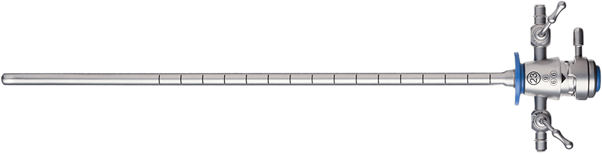

나를 위한 방광경 클리닉
요도를 통해 방광 내부의
정교한 검사
가 가능한 방광경
잦은 요로감염, 방광염, 혈뇨, 배뇨통, 방광통, 빈뇨 등 다양한 증상의
원인을 정확하게 찾을 수 있습니다.
- 수술시간 20분 내외
- 회복기간 2~3일
- 입원여부 없음
- 마취방법 수면+국소마취
방광경

유연하고 가느다란 최신 침습 내시경으로 방광 내부를 직접
관찰하는 검사입니다.
여성은 요도가 짧아 외음부부터 방광까지 쉽게
접근이 가능하며,
요도나 방광 내의 병변을 정밀하게 확인
할 수 있습니다.
방광경 검사 방법
-
1 사전검사증상에 대한 문진 및 진료
-
2 시술 준비a. 항생제 처방 b. 방광 비우기
-
3 내시경 시술a. 국소 마취제를 요도에 도포
또는 수면마취
b. 내시경을 요도를 통해 삽입
c. 방광 내부 관찰 (약 5~10분 소요) -
4 회복 관찰소변 검사를 통해 회복을 관찰 후 귀가
대표적 적응증
- 혈뇨
-
지속적 요로
감염
- 배뇨 통증
-
빈뇨, 절박뇨,
요실금,
방광염등
의 배뇨장애 -
불명확한 골반통,
하복부 불쾌감
나를위한 방광경 클리닉
- 당일 퇴원
- 시술 직후 일상생활 가능
- 최신 침습 내시경 사용으로 통증 최소화
-
초음파나 소변 검사만으로 알 수 없는
방광 질환의 원인 확인 가능 -
필요시 조직 검사, 보톡스 시술까지 한 번에
가능
방광경 검사 대상자
자가 체크 리스트
-
반복적인 방광염
-
배뇨 시 통증
-
소변을 자주 보거나 참기 힘든 경우
-
소변에서 피가 나오는 경우

프라이빗한 휴식 과 회복
나를위한산부인과에서는 치료를 받는
환자분들이
긴장을 완화하고 편안한
마음으로 쉬실 수 있도록
고급스럽고
편안한 분위기의 1인 회복실을 제공합니다.